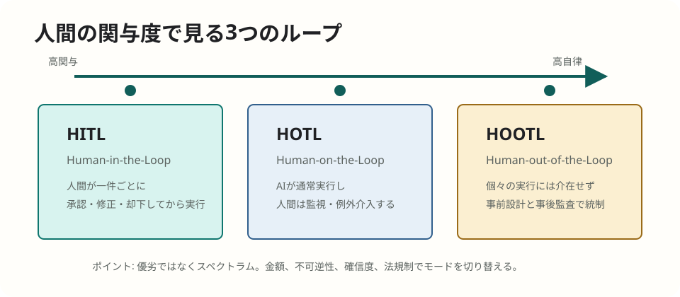
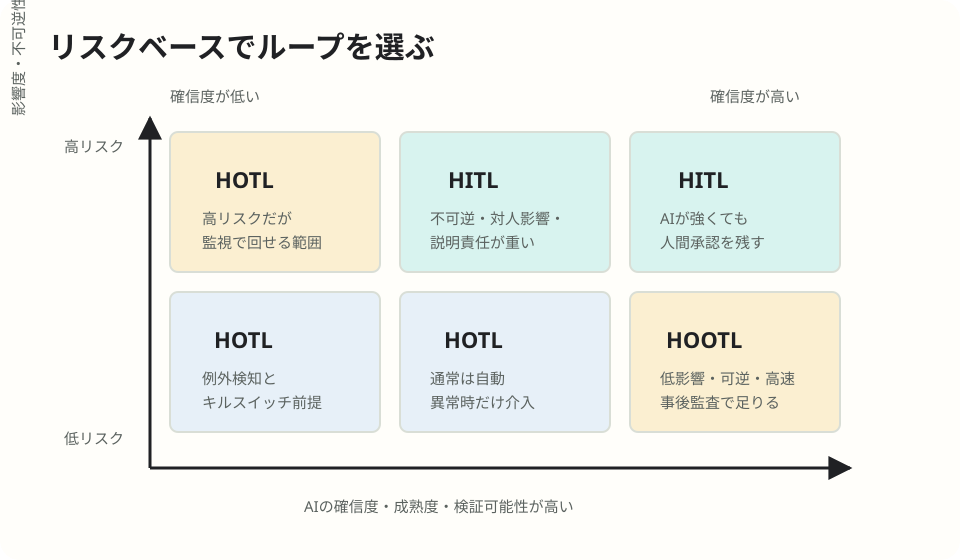

AI Agent / ガバナンス
業務システムにおけるループ設計の効果的な設計
HITL（イン・ザ・ループ）、HOTL（オン・ザ・ループ）、HOOTL（アウト・オブ・ザ・ループ）の体系的解説。AIが「助言者」から「自律的に実行する主体」へ移るなかで、人間が業務フローのどこに立ち、どこで止められるのかを整理します。
簡潔なQ&A
- Q. このページは何をまとめたものですか？
- A. ユーザー提供PDF「業務システムにおけるループ設計の効果的な設計」の内容を、HTMLとして読みやすく再構成したものです。
- Q. HITL / HOTL / HOOTLは何を分ける考え方ですか？
- A. AIが業務を実行するとき、人間が一件ごとに承認するのか、全体を監督して例外時に介入するのか、個々の実行から外れて事前設計と事後監査で統制するのかを分ける考え方です。
- Q. 3つのモードは優劣の関係ですか？
- A. PDFでは、優劣ではなく連続したスペクトラムとして扱っています。同じ業務フローでも、金額、リスク、不確実性に応じて動的に切り替える共存設計が求められると説明しています。

1. はじめに: 2026年におけるAIの役割シフトと課題
チャットからアクションへの移行
2023年から2024年のAIは、人間が問いかける「助言者」の位置に留まっていました。要約、下書き、コードの提案などが主な使われ方です。しかし2026年に入り、AIは「自律的に実行する主体」へと役割を急激に変革させています。インターフェースはチャットからアクションへ、設計思想は人間優先から「エージェント・リーダブル」、つまりエージェントが理解・処理しやすい形式へとシフトしています。
AIが請求書の承認、在庫の発注、顧客への返金、本番インフラの構築などを引き受ける現代において問われるのは、「AIの精度が何%か」ではありません。より重要なのは、「人間がこの一連の流れのどこに立ち、どこで止められるのか」というループの設計思想です。
PDFでは、ガートナーの予測として、2026年末までにエンタープライズ向けアプリケーションの40%にAIエージェントが内蔵されると紹介しています。また、デロイトの調査として、中程度以上にエージェンティックAIを活用する企業は2025年時点の23%から、2年以内には74%へ跳ね上がると見込まれるとしています。
2. 3つのループの本質的定義
PDFでは、HITL、HOTL、HOOTLという3つの概念を単なるバズワードではなく、元々は軍事領域、たとえば米国防総省司令 DoD Directive 3000.09「兵器システムにおける自律性」などにおいて、人命に関わるシステムにおける責任の所在と「適切なレベルの人間関与」を厳密に定義・分類するために鍛えられた概念として説明しています。
現代の企業活動・業務システムにおいても、この思想が移植されているという整理です。人間の関与度とシステムの自律性の関係は、次のようなスペクトラムとして示されています。
高関与・半自律（HITL） → 監督下の自律（HOTL） → 完全自律・事前/事後統制（HOOTL）
1. ヒューマン・イン・ザ・ループ（HITL: Human-in-the-Loop）
HITLは、AIが提案や下書きを生成し、人間が一件ごとに承認・修正・却下を行って初めて実行される方式です。AIはループの内側に組み込まれ、実行のハンドルは常に人間が握ります。
典型例として、AIが起案した与信稟議をアナリストが一件ずつ承認すること、コーディングエージェントが書いたコードのプルリクエストを開発者がレビュー後にマージすること、コンタクトセンターでAIが作成した返信下書きをオペレーターが送信前に確認することが挙げられています。
2. ヒューマン・オン・ザ・ループ（HOTL: Human-on-the-Loop）
HOTLは、AIが実行までを自走し、人間はその流れを全体として監督・監視し、異常時や例外時にのみ割り込んで処理を止める、または引き取る方式です。PDFでは、人間はループの上に立つ、と表現されています。
典型例として、サプライチェーンの需給計画エージェントが自動で発注を行い、プランナーは閾値を超えた異常アラートのみを確認するケース、不正検知システムが大量のトランザクションを自動処理し、アナリストはフラグが立ったケースのみを精査するケースが挙げられています。
3. ヒューマン・アウト・オブ・ザ・ループ（HOOTL: Human-out-of-the-Loop）
HOOTLは、事前に設計・承認されたルール・範囲内において、個々の実行の瞬間に人間は一切介在せず、AIが検知から実行までを完結させる方式です。人間は事前の設計と事後の監査に専念します。ミリ秒単位の判断が必要で、人間が物理的に間に合わない領域に適用されます。
典型例として、ネットワーク機器のDDoS自動緩和、広告入札のリアルタイム最適化、与信枠内におけるクレジットカード決済の自動承認、ECサイトの動的価格設定、つまりダイナミックプライシングが挙げられています。
PDFでは、3つのモードは優劣の関係ではなく、連続したスペクトラムであると強調しています。同じ業務フロー内でも、金額やリスク、不確実性に応じて動的にモードを切り替える共存設計が求められます。
3. 各モードの設計におけるベストプラクティス
HITLの設計原則: 形だけの関与を排除する
形だけのHITLは、中身を見ずに機械的に承認を通す「ラバースタンプ」、つまり追認問題を招き、システム全体を致命的に脆弱にします。実質的なレビューが行われる環境設計が不可欠です。
- 不可逆な行動の直前に絞る: 金銭の移動やデータ削除といった取り返しのつかない行動の手前にのみ人間承認を置きます。可逆的な行動は自動化し、人間を疲弊させないことが大前提です。
- 判断に必要な文脈（Context）の提示: AIの判断根拠、参照元データ、確信度（コンフィデンススコア）を承認画面に併記し、人間が数秒で理由を追えるようにします。
- 意図的な摩擦（Friction）の設計: 確信度が低い場合は二重チェックを要求する、承認理由を一言記述させる、数秒の保留時間を挟むなど、あえて滑らかさを崩すことで、自動化バイアスから人間を引き戻します。
- 教師信号の回収: 人間が修正・却下した結果を構造化データとして蓄積し、エージェントの品質改善へとフィードバックする循環系を組み込みます。
HOTLの設計原則: 可観測性とガバナンス
PDFでは、2026年に多くのエンタープライズ企業が最も本格的に移行しようとしている領域としてHOTLを位置づけています。実行をAIに委ね、戦略を人間が統治します。
- 可観測性（オブザバビリティ）の確保: エージェントの失敗は単一のAPI呼び出し単位ではなく、複数ステップにまたがる因果関係の連鎖として現れます。セッション全体のトレースをリアルタイムに捕捉するツール群、たとえばLangSmithやGalileoなどの導入が前提とされています。
- キルスイッチと段階的エスカレーション: 異常行動を即座に停止できるキルスイッチと、介入時に文脈を途切れさせずに人間に引き継ぐシームレスなワークフローが必要です。誰が、何の権限を代理して行動したかの監査ログも完全に保持する必要があります。
- ミリオンエージェント問題への対応: 1人の担当者が数十体以上の自律エージェントを差配する時代が到来し、監督そのものが「エージェント・オペレーション（AgentOps）」という新しい専門職へ進化すると説明されています。
HOOTLの設計原則: 自律範囲の厳密な囲い込み
人間が介在しないからといって、HOOTLは「無責任」を意味しません。個々の実行から人間を外すために、より厳密な事前設計、検証、統制が要求されます。
- ハードリミット（上限）の設定: エージェントが扱える金額、操作可能なデータ範囲に物理的な上限値を設け、閾値に達した瞬間に自動的に処理を止めて上位ループ、つまりHOTLやHITLへ自動昇格させます。
- 事後監査とドリフト検知: 実行時に人間が立ち合わないため、完全なログ整合性の担保、定期的なシミュレーションテスト、抜き取り検査、モデルの劣化、つまりドリフト検知が安全性を担保する唯一の手段となります。
- 法規制による制限の遵守: 生体認証など極めて慎重を要する領域では、HOOTLは原則禁止されており、EU AI法などでも少なくとも2名の自然人が検証する「4つの目原則（Four-Eyes Principle）」が義務付けられていると説明されています。

4. 現場への適用とリスクベース選択
PDFでは、業務を「業種」で一括りにするのではなく、各タスクを「影響度・不可逆性」と「AIの確信度・成熟度」の2軸で評価し、一案件ごとに動的にループを切り替える「リスクベース選択」が現代の標準アプローチであると説明しています。
| 領域 / 現場 | HOOTL 完全自律 | HOTL 監督・例外処理 | HITL 人間承認 |
|---|---|---|---|
| 人事（HR）システム 個人への影響が大きく、法規制が厳しい性質（HITL寄り） |
勤怠の集計、有給残日数の算定、規定内の定型的な経費精算、アカウントの自動発行など。 | 応募書類の一次スクリーニング、最適シフトの自動生成。AIがランク付けし、人間は境界線上の候補のみ確認。 | 最終的な採用合否、解雇、昇進・昇給、人事評価。個人の人生に不可逆な影響を与えるため完全介在。 |
| マーケティング 高頻度・可逆的であり、速度が競争力になる性質（HOOTL寄り） |
リアルタイムの広告入札（RTB）、ダイナミックプライシング（動的価格設定）、レコメンド。 | チャネル横断での予算最適化配分、生成AIを用いたクリエイティブの大量生成・執行。人間は異常値のみ監視。 | プレスリリース、公式SNS発信、ブランドキャンペーンのコアコピー、医薬・金融などの法的制約を伴う訴求。 |
5. 注意点・課題、および今後のタイムライン
自動化バイアスの脅威
人間は、システムが自信ありげに提示した出力に対して無批判に追従する心理的傾向、自動化バイアスを持っています。PDFでは、臨床研究において、AIの助言を提示された医師グループの診断精度が73%から61.7%へ低下したデータに触れ、人間をただループの中に放り込んで座らせるだけのHITLはガバナンスとして機能しないと説明しています。
エージェント・ウォッシングの横行
PDFでは、ガートナーが、既存のチャットボットや従来のRPAの名前を「エージェント」に掛け替えただけの「エージェント・ウォッシング」を厳しく批判しており、実態の伴うベンダーは限られていると指摘している、と紹介しています。
また、過剰な自律化とガバナンス設計の欠如、コスト高騰に伴い、エージェントプロジェクトの40%以上が2027年末までに中止・整理されると予測していると説明しています。
今後の重要マイルストーン
- 2026年8月2日: PDFでは、EU AI法の高リスクAI条項の適用義務化として、人間による監視要件を定めた第14条などが本格的に適用され、高リスク用途におけるループ設計は「ベストプラクティス」から「法的遵守要件」へ格上げされると説明しています。
- 2026年後半から2027年: 加熱した期待による概念実証、つまりPoCの整理・淘汰が起きる一方、最初からループ設計と可観測性を作り込んだ本物のエージェント基盤が実務に定着し、組織内に「エージェント・オペレーション（AgentOps）」という役割が標準化していくと説明しています。
要点
提供PDFの主張は、AIエージェント活用の本質的な論点を「AIの精度」だけでなく、「人間がどこに関与し、どこで止められ、どのように監査できるか」というループ設計に置くものです。HITL、HOTL、HOOTLは固定的な選択肢ではなく、タスクのリスク、不可逆性、AIの成熟度に応じて切り替える連続体として扱われています。